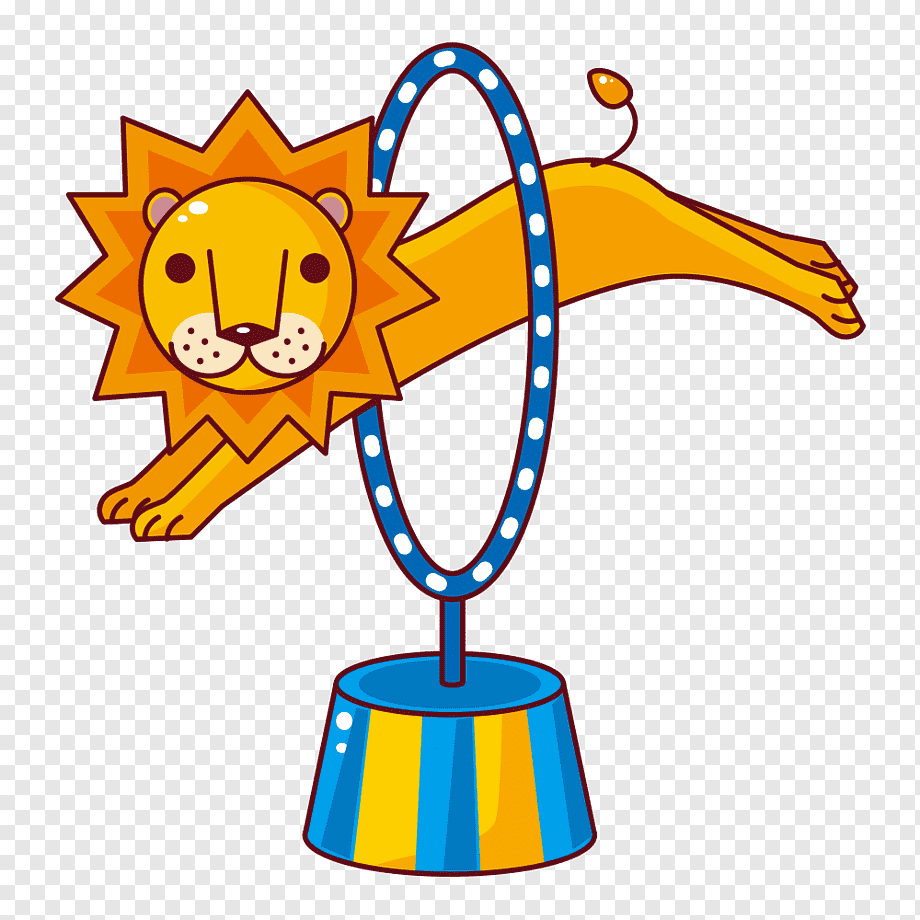

Афиша
| Название шоу |
Дата |
Продолжительность |
| «ECOLIBRUM» |
05.02 - 30.05.2021 |
2,5 часа |
| Love Stories |
12.02 - 13.06.2021 |
2,5 часа |
- В программе принимают участие:
- Жонглер - Денис Кабачный;
- «Игра хула хупами» - Хусаин Гулямов;
- Акробаты на батуте
- воздушные гимнасты
- Постановочная группа:
- Д. Висков - главный режиссер-постановщик, основатель и движущая сила творческой команды
- А. Гонсалес - режиссер-постановщик комических действий, художественный руководитель театра «MIMIRICHI»
- Л. Лячко - сценарист, креативный директор программы
- Г. Горбач - хореограф-постановщик